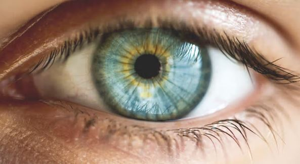

Blue Eyes
I got blue eyes with a bit of yellow around the center of them though it can only be seen in good lighting clsoe up (central heterochromia).
I got blue eyes with a bit of yellow around the center of them though it can only be seen in good lighting clsoe up (central heterochromia).